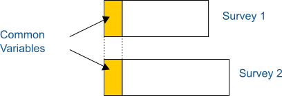

Symbolic data analysis plays an important role in the field of official statistics. Let me provide you with some relevant information:
Symbolic Data Analysis (SDA):
In summary, symbolic data analysis provides a powerful framework for handling diverse and complex data in official statistics. It allows us to go beyond traditional numerical analysis and consider the rich context of information.
In summary, symbolic data analysis enriches our understanding of complex data structures in official statistics. It allows us to go beyond mere numbers and consider the context and meaning behind the data.
Certainly! Data fusion is becoming increasingly relevant in official statistics. The aim of data fusion is to combine two or more data sources using statistical methods in order to analyze different characteristics that were not jointly observed in one data source². Let’s delve into this topic further.
Data fusion involves integrating multiple related datasets. It allows statisticians to manage uncertainty and conflicting data on a large scale. The goal of data fusion is to create useful representations of reality that are more complete and reliable than what a single source of data can provide⁴.
Here are some key points related to data fusion in official statistics:
In summary, data fusion in official statistics allows statisticians to leverage multiple data sources effectively, leading to more comprehensive and accurate insights.
DF is the practice by which two or more separate data sources are brought together to form a single database that contains all the previously separate information. The purpose of such integration is to obtain a reliable estimate of the true relationship between any set of statistics which are currently unavailable in single-source form.
During the fusion, individuals from one survey are matched to individuals in the other and the two sets of behaviours are jointly ascribed to the matched individuals. For the sake of understanding the process, it is convenient to nominate one survey the donor and the other the recipient.
An important fundamental assumption of fusion is that “hooks” or linking variables contain enough information to describe the correlations between the variables in Donor and Recipient datasets. For example: “If given two datasets, Recipient, consisting of variable sets X and Y, and Donor, consisting of variables X and Z, we can perform fusion under the assumption that Y and Z are independent given X”.
It is important to note that fusion is not a single technique – there are different approaches that might be taken depending on the objectives. The principles for the different approaches of data fusion are quite similar and follow these general steps:
For example, in marketing, marketers want to know everything they can about their target consumer in order to maximise the return on their research investment:
Those planning and buying advertising campaigns need to uncover the best ways of reaching and influencing their target audiences:
But no individual respondent will agree to answer such a large number of questions. And many of the questions will be impossible to answer accurately.
This conundrum of needing more information while finding it harder to collect from surveys alone is likely to get harder rather than easier as time passes. One of the statistical techniques used to help address this is data fusion.
The practical application of data science demands a high level of skill and expertise, as well as experience – many of the decisions and choices made in building fusions, for example, are not black and white, demanding judgement and a deep knowledge of the context.
We match concepts/classes (not the single individuals), which rapresents aggregation of microdata, not always of the same nature (income is measured on citizens, healt services are measured on hospitals, land cover use is measured on the geographical space,…) from different database/surveys e.g.
Uses of Joining Objects in Official Statistics: Data Fusion We find a new application of joining symbolic objects that consists of joining assertions coming from different surveys. This joining enables us to obtain additional information, data imputation, to obtain conclusions about causes and possible effects,…
Fusion using symbolic objects differs from the traditional data fusion in the way of matching. Instead of joining record by record of common variables, we join by symbolic objects each one describing a group.
The fusion allows us to relate independent surveys to some common items. In the SODAS project framework, this comparison will be between surveys of different countries of the European Union.
An example showing this new use in EUSTAT, is the fusion of the two independent surveys Use of Time (EPT) and Living Conditions (ECV). They have common variables (socio-demographic) and it is probable that there is a relation between them.
The common variables chosen for this study could be: Sex, Marital status, Age, Relation to Activity and Level of Education.
We consider the following data arrays:
\(X_1\) is a symbolic data array that describes socio-demographic groups by the following variables of Use of Time:
\[Y_{11}(limp) = \text{Participation in Cleaning}\]
\[Y_{12}(prpc) = \text{Participation in Preparing Meals}\] \[Y_{13}(prac) = \text{Sport Practice}\] \[Y_{14}(cuip) = \text{Time used in Personal Care}\]
One of the objects of the array is:
os "Woman Married < 35 years Employed Secondary"(54) =
[limp = {"Null Particip."(0.347273), "Low Particip."(0.188186), "Average Particip."(0.346782), "High Particip."(0.117759)}] &
[prpc = {"Null Particip."(0.0719004), "Low Particip."(0.400066), "Average Particip."(0.436589), "High Particip."(0.0914451)}] &
[prac = {"Null Particip."(0.877218), "Low Particip."(0.122782)}] &
[cuip = [0:170]]
\(X_2\) is a symbolic data array that describes the same socio-demographic groups by the following variables of Living Conditions:
\[Y_{21} (jorna) = \text{Length of Working Day}\] \[Y_{22} (comt) = \text{Return home to have lunch} \] \[Y_{23} (ractp) = \text{Branch of Economic Activity} \]
os "Woman Married < 35 years Employed Secondary"(34) =
[jorna = {"SPLIT SHIFT"(0.394297), "CONTINUOUS"(0.434047), "NOT APPLICABLE"(0.171656)}] &
[comt = {"RETURN HOME TO LUNCH"(0.637714), "NOT RETURN HOME TO LUNCH"(0.345755), "NOT APPLICABLE"(0.0165312)}] &
[ractp2 = {"PAPER-GRAPHIC ART"(0.0165312), "CONSTRUCTION AND CIVIL WORKS"(0.0235133), "COMMERCE-HOSTELRY-REPARING-RECOVERY"(0.337456), "TRANSPORTS AND COMMUNICATION"(0.0317708), "BANK AND INSURANCES"(0.048266), "NON-COMMERCIAL SERVICES"(0.078488), "PUBLIC ADMINISTRATION- TEACHING"(0.137167), "VEHICLES AND TRANSPORT MATERIAL"(0.0167604), "CHEMISTRY"(0.0331782), "COMMERCIAL SERVICES"(0.140833), "RUBBER AND PLASTIC TRANSFORMATIONS"(0.0199348), "AGRICULTURE-CATTLE-FORESTRY- FISHING"(0.0201623), "METALLIC CONSTRUCTION"(0.0246369), "ELECTRIC MATERIAL AND MACHINERY"(0.0497522), "WOOD-FURNITURE"(0.0215493)}]
Then, the joint symbolic objects is:
os “Woman Married < 35 years Employed Secondary”(88) =
[limp= {"Null Particip."(0.347273), "Low Particip."(0.188186), "Average Particip."(0.346782), "High Particip."(0.117759)}] & [prpc= {"Null Particip."(0.0719004), "Low Particip."(0.400066),"Average Particip."(0.436589), "High Particip."(0.0914451)}] & [prac= {"Null Particip."(0.877218), "Low Particip."(0.122782)}] & [cuip= [0:170]] & [jorna= {"SPLIT SHIFT"(0.394297), "CONTINUOUS"(0.434047), "NOT APPLICABLE"(0.171656)}] & [comt= {"RETURN HOME TO LUNCH"(0.637714), "NOT RETURN HOME TO LUNCH"(0.345755), "NOT APPLICABLE"(0.0165312)}] & [ractp2= {"BANK AND INSURANCES"(0.048266), "NON-COMMERCIAL SERVICES"(0.078488), "PAPER-GRAPHIC ART"(0.0165312), "COMMERCIAL SERVICES"(0.140833), "CHEMISTRY"(0.0331782), "VEHICLES AND TRANSPORT MATERIAL"(0.0167604), "COMMERCE-HOSTELRY-REPARING-RECOVERY"(0.337456), "METALLIC CONSTRUCTION"(0.0246369), "ELECTRIC MATERIAL AND MACHINERY"(0.0497522), "TRANSPORTS AND COMMUNICATION"(0.0317708), "WOOD-FURNITURE"(0.0215493), "AGRICULTURE-CATTLE-FORESTRY-FISHING"(0.0201623), "PUBLIC ADMINISTRATION- TEACHING"(0.137167), "CONSTRUCTION AND CIVIL WORKS"(0.0235133), "RUBBER AND PLASTIC TRANSFORMATIONS"(0.0199348)}]
Symbolic Objects may be visualized in three different ways:
In a symbolic table,
By star graphs and
By the specific language of symbolic objects, SOL (Symbolic Object Language).
By other plots that are specific for interval or distributional descriptions.
A sybolic data table is like a classical datatable but each cell contains a multi-valued description
A Zoom star is a radial plot where each radius represents a variable. There are two types of zoom star visualization, 2D and 3D, which provide different levels of detail. The 2D representation provides a global impression of the symbolic object, whereas 3D representation provides much more detailed information.
The Zoom Star representation is derived from Kiviat Diagrams where each axis corresponds to a variable. In the same graph we can represent categorical variables, intervals, weighted values, taxonomies,… without overloading the graph.
The following table summarizes the representation of each variable depending on its type.
| Variable Type | Axis Description |
|---|---|
| Quantitative | Graduated axis |
| Categorical | Dots equally distributed on the axis |
| Categorical not weighted | Axis drawn in black |
| Categorical weighted | Axis drawn in claret |
| Not applicable | Axis drawn in grey |
The limit for variables to be represented is 24 and for categories is 15.
Selecting an axis with the mouse, we can display the distribution of the chosen variable (histogram). Moreover, we can also display taxonomies and dependencies of a variable by clicking on the icon that appears in the corresponding axis.
Graphics can be moved right, left, up and down for a better visualization.
In the 2D Zoom Star, axes are linked by a line that connects most frequent values of each variable. If there were a tie of the most frequent value in several categories, the line would link all of them.
In the presence of an interval variable, the line is linked to the minimum and maximum limits and the entire area is filled.
For instance, we have defined symbolic objects as groups of population defined by sex, age, marital status, level of education and relation to activity in the P.R.A. survey. We have obtained 314 symbolic objects, which are the combination of the modalities of these variables.
In this case, as we use a survey, the distribution has been calculated taking into account sampling weights.
In the following graph, we can see two mother-daughter variables. Daughter variables that are N.A. appear in the graph as a grey axis. On the right, we can see the distribution of one of the variables.
In the 3D representation, we can see distributions corresponding to each variable with weighted values. Numerical variables are represented by rectangles from the minimum to the maximum value.
For example, the distribution of the symbolic object “Woman” in the P.R.A survey corresponding to a quarter in Alava is the following,
The comparison of several symbolic objects is easier using the 2D representation. We compare if the shapes of the lines that link the axes are similar.
From the survey of Enterprises doing R&D in the Basque Country, we have built some symbolic objects describing branches of economic activity. From the 18 available branches, we have chosen 2 to compare them, “Land, Cattle and Fishing” and “Metallurgy”.
The chosen variables to describe both branches are: Type of Enterprise, Type of R&D activity, number of researchers in the activity, size of the enterprise in staff, intramural expenses, percentage of researching dedicated to manufacturing products and energy.
From the graphs we can draw the following conclusions:
The two branches differ in the character of the R&D activities , in “Land, Cattle and Fishing” the activities can be both systematic or occasional, whereas in “Metallurgy” the activities are mostly systematic. Another difference is the size of the enterprises, in the metallurgic industry they are larger than in the “Land, Cattle and Fishing” branch. Moreover, the metallurgic industry uses 100% of intramural expenses for researching manufacturing products.
The comparison with histograms (3D representation) also provides relevant information about the distributions.
We represent the same 3D graphs of branches of economic activity as in the previous example, to obtain more information.
Now, we can observe better the differences between distributions in the two branches. In “Metallurgy”, the distributions of the variables “size of the enterprise” (taman) and “intramural expenses” (gintr) are much more dispersed among all categories, whereas in “Land, Cattle and Fishing” the distributions of these two variables are centred in a unique value.
Basic Statistics of Symbolic Objects consists of a set of graphs and summary measures depending on the type of variable.
If the variables are multinomial, we can draw frequency graphs such as bar graphs and pie charts.
If the variables are interval, we can draw frequency graphs with central tendency and dispersion measures. Moreover, we can represent biplots.
Finally, if the variables are probabilistic, we can draw graphs of capacities.
Symbolic Data on official stats and visualization